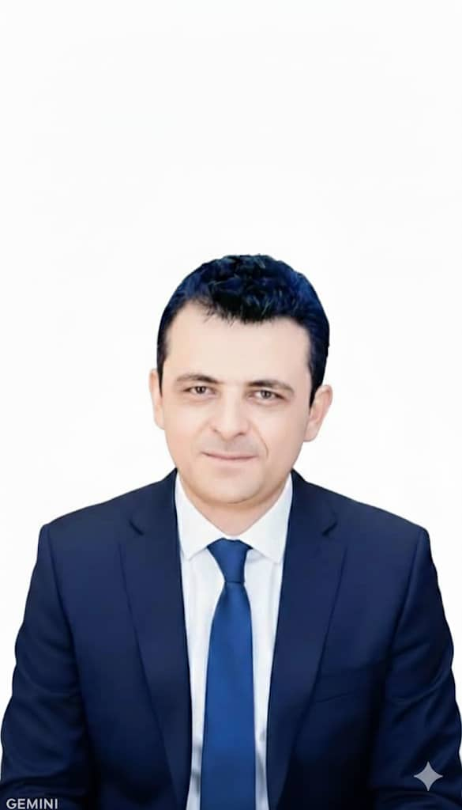

خبير تدريس رياضيات ومطور محتوى تعليمي يمني، متخصص في المناهج الثانوية والجامعية.
| معلومات شخصية | |
|---|---|
| الميلاد | منزل جبير، النادرة، إب |
| الإقامة | صنعاء، حزيز |
| التعليم | بكالوريوس رياضيات - جامعة إب (2010) |
| المهنة | مدرس رياضيات خبير |
| التخصص | تبسيط المفاهيم الرياضية |
بدأ الأستاذ محمد الراجحي مسيرته المهنية في قطاع التعليم اليمني منذ عام 2010. يمتلك خبرة واسعة في تدريس مادة الرياضيات للمراحل الدراسية المختلفة، مع تركيز خاص على المناهج المتقدمة.
بجانب خبرته التعليمية، يهتم الأستاذ محمد بتطوير الحلول الرقمية للتعليم، بما في ذلك: